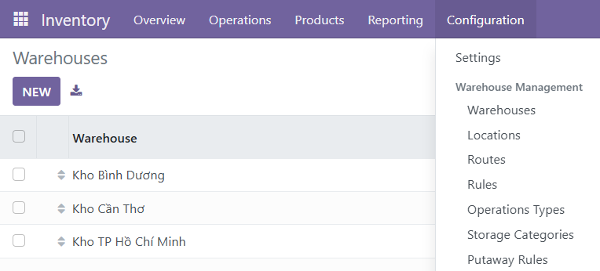
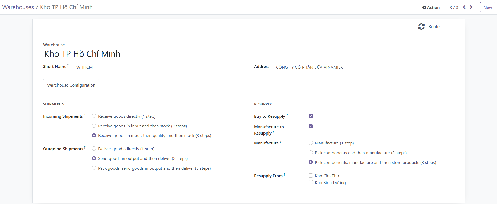
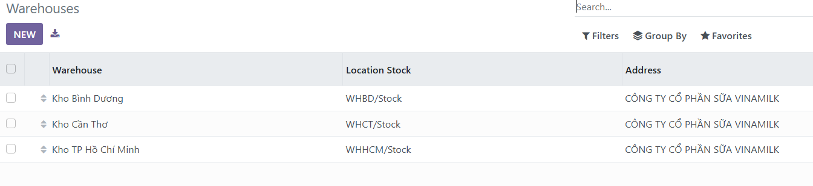

My Contribution
- Researched Odoo's architecture, including its modules, their functions, and the relationships between them — particularly how Inventory connects with other modules.
- Directly carried out most of the configuration and testing work within Odoo.
- Coordinated the team: assigned tasks, held meetings three times a week, and tracked progress and attendance using Excel.
- Reviewed and revised content and presentation slides prepared by team members before finalization.
- Outcome: successfully modeled a complete warehouse management workflow — covering product categorization, storage locations, stocktaking procedures, and payment processing — in line with the project requirements.
Process Analysis
To understand how Inventory coordinates with the rest of the business, we first mapped the overall workflow, then modeled each core process as an Activity Diagram showing how the warehouse, purchasing, sales, and accounting departments hand off work to one another.


Odoo Implementation – Setting Up Warehouses
Vinamilk operates multiple production sites, so the first step was to represent each physical site as a separate warehouse in Odoo. This lets stock levels, replenishment routes, and reporting be tracked independently per site while still rolling up into one system.



Odoo Implementation – Structuring Storage Locations
Inside each warehouse, every product needed to be traceable down to an exact zone, shelf, and rack — matching how Vinamilk actually organizes goods by product category (packaging, refrigerated goods, cultures/additives, and finished dairy products). We built this as a nested location tree in Odoo's Locations module.